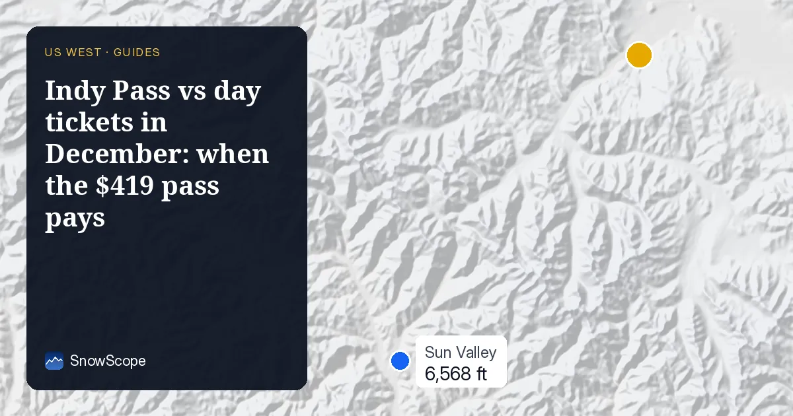

Indy Pass vs day tickets in December: when the $419 pass pays
The Indy Pass gives two days at each of more than 300 independent ski areas for $419. For a December skier, the real question is not just the price but whether small mountains in the inland West and Rockies actually hold snow when you need it. We checked seven Indy areas that sit on SnowScope's December list and worked out when the pass beats buying day tickets one area at a time.
See the live snow forecast for US West in the SnowScope appSnow depth, powder alerts and the 3D map, free.
What you pay for the pass, and what two days cost instead
The Indy Base Pass for 2026-27 costs $419 for adults and includes two all-day or all-night tickets at each member area, with some blackout dates. The Indy+ Pass is $469 and removes the blackout dates. If you are planning a December trip that might cross the holiday period, the blackout question matters as much as the $50 difference.
Here is what two full-price days cost at the resorts we checked. Loveland is the cheapest if you book online before December 14 at $120 for two days, but jumps to $318 from December 14 onwards. Brundage starts at $130 for two days. White Pass costs $138 at its lowest off-peak online rate. Sunlight begins at $148. Beaver Mountain is $150. Montana Snowbowl runs $156 on weekdays or $170 on weekends. Snow King starts at $200. The pass breaks even on the third area if you use day tickets, but on the second area if you are paying weekend or peak prices.

Snow odds shape the real choice
December snow is not guaranteed anywhere in the lower 48 states, but the inland Northwest and northern Rockies are more likely than the Colorado high plains. Looking at 46 past winters, White Pass, Snow King and Brundage each have a 87 percent chance of holding at least 20 in (50 cm) at mid-mountain by 15 December. Montana Snowbowl reaches 83 percent. Sunlight sits at 72 percent. Loveland is at 67 percent, and Beaver Mountain is the outlier at 57 percent.
These odds tell you where to build a December Indy road trip. A loop through the Northwest and northern Rockies—White Pass in Washington, Brundage in Idaho, Montana Snowbowl in Montana and Snow King in Wyoming—puts you on terrain with real snow history. Beaver Mountain and Loveland are better visited later in December, when their snow odds improve sharply.
When to skip the pass and buy single days
One or two days at a single area? Day tickets win every time. A Monday at Montana Snowbowl costs $78. A weekday at Beaver Mountain runs $75 for a 10-pack, or about $72 per day. Neither is expensive enough to justify carrying a pass you do not use elsewhere.
Loveland is a special case. Its early-season online ticket through 13 December is $60. That is cheaper than any single day you could assign from the Indy Pass, so if you are skiing Loveland in the first two weeks of December, buy the online ticket and save the pass for another area.
The pass makes sense for multi-resort trips
The Indy Pass is built for a different skier: someone who moves between small hills and spreads the pass across a whole season. December is a good time to start using it, because two of these seven areas with solid December snow (White Pass and Brundage) are pass members. Pair them with Montana Snowbowl or Snow King in the same trip and the pass begins to pay.
But think of the Indy Pass as a full-season tool, not a December tool. Use it now at the safest December Indy areas, then pick it up again in January at other member resorts as conditions vary across the winter.
How to plan a December Indy trip
Pick your dates first. A trip in the second or third week of December avoids holiday weekend rates and the December 19–January 3 peak period at most resorts. At that time, the snow odds are already high at most of these areas without gambling on late-December storms.
Then stack your two-day visits. You need at least three areas to make the pass pay off against day-ticket prices. If you stay on the Northwest and northern Rockies circuit, the odds of finding skiable snow at two or three of your stops are good. Loveland and Beaver Mountain are weaker bets in early December, so use the pass at the safer areas first.
Tips for skiers
- Ski three or more areas in December to make the $419 pass worth the cost; one or two hills, buy day tickets instead.
- If your trip crosses 19 December or the holidays, pay the extra $50 for Indy+ to avoid blackout dates.
- Build your December Indy trip around White Pass, Brundage, Montana Snowbowl and Snow King; they have the best December snow odds among these seven areas.
- Loveland's $60 online tickets through 13 December beat any pass day, so buy tickets for early December and use the pass elsewhere.
- Skip weekdays and use the pass on weekends and holidays when day-ticket prices spike; a Monday at Montana Snowbowl ($78) or Beaver Mountain ($72) is already a better deal.
About these numbers
Resort snow depths are the deepest snow on the resort's upper slopes on the date shown; they are estimates for an area, not a measurement at one point. Forecasts can change. Always read the official avalanche bulletin before going off-piste.
Cite this report
For research, teaching or the press: the numbers and charts are free to reuse under CC BY 4.0 with this citation.
SnowScope (2026), Indy Pass vs day tickets in December: when the $419 pass pays, https://snowscope.app/blog/en/2026/11/indy-pass-vs-day-tickets-december-2026.html, accessed 2026-11-14
SnowScope (Atlas Labs). (2026, November 14). Indy Pass vs day tickets in December: when the $419 pass pays. SnowScope snow reports. https://snowscope.app/blog/en/2026/11/indy-pass-vs-day-tickets-december-2026.html
BibTeX
@misc{snowscope2026indypassvsdayticketsdece,
author = {{SnowScope (Atlas Labs)}},
title = {Indy Pass vs day tickets in December: when the $419 pass pays},
year = {2026},
month = nov,
howpublished = {\url{https://snowscope.app/blog/en/2026/11/indy-pass-vs-day-tickets-december-2026.html}},
note = {Published 2026-11-15 09:34 UTC; accessed 2026-11-14}
}· CC BY 4.0 · Methods, data and tools →
Follow US West
Free: a message when fresh snow is coming, and the forecast every morning.
More snow reports

Brundage Mountain offers reliable early-season snow near McCall, Idaho. Typical mid-mountain depth reaches 30 in (77 cm) by mid-December, with tickets starting at $65 on select days.

Sunlight near Glenwood Springs faces an early-season gamble in December. By mid-month you can expect 26 in (67 cm) at mid-mountain, though only 72% of winters reach that depth.

Beaver Mountain offers fixed-price tickets at $75 with no peak surcharge. Early December is often thin; aim for mid-month or later when snow is more reliable.